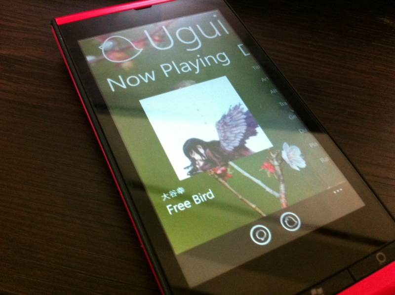

今さらですけど、Windows Phone 7.5 用のアプリを作ってみました。
公開日：

再生中の楽曲の情報を取得して、あらかじめ登録したフォーマットに従ってテキスト化し、それを OS 標準の共有機能で各種 SNS（Twitter、Facebook、Windows Live、LinkedIn）へ投稿できるアプリ「Uguisu（うぐいす）」を作ってみました。
動画撮影中にバグを発見するというおまけつき (◎_◎;)
基本機能
- 楽曲情報の取得
- フォーマットに従って楽曲情報をテキストに
- OS 標準の共有機能で投稿
未公開です
秋にいろいろやってた開発コンテスト用に考えていたのですけど、当初 Windows 8 に Windows Phone SDK が入らなかった*1ので途中でやる気をなくして放置していました。まぁ、ユーザーインターフェイスが多少ショボくても自分で使う分には問題がないわけで。
Windows Phone SDK 8.0 が公開されたので少しやる気が回復して、いろいろ細部に手を入れたのですけど、いざストアに登録する段階になって億劫に……。普通ならエミュレーターで撮っちゃえるのだけど、このアプリの場合はどうしても実機でしか動かせなくて、スクリーンショットをとるのが面倒*2。Windows Phone 8 はスクリーンショットが簡単に撮れるそうなので、それに期待しておきます。
実はあと二つぐらい作りかけのがあるのですけど、それも日本で Windows Phone 8 端末が発売されてやる気がでたら完成させるつもりです。